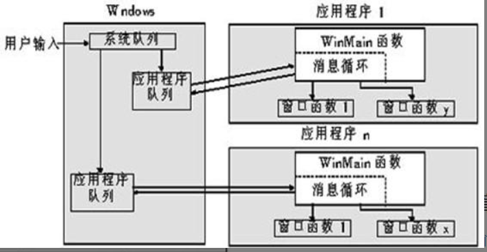
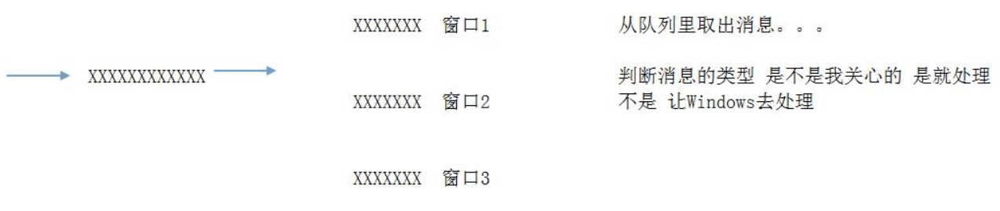

# 事件 消息
Windows 中的事件是一个 "动作"，这个动作可能是用户操作应用程序产生的，也可能是 Windows 自己产生的.
而消息，就是用来描述这些 "动作" 的，比如：
这个动作是什么时候产生的？
哪个应用程序产生的？
在什么位置产生的？
等等。。。
事件驱动消息，消息封装事件
Windows 为了能够准确的描述这些信息，提供了一个结构体：MSG，该结构体里面记录的事件的详细信息.
typedef struct tagMSG {
HWND hwnd; // 窗口句柄
UINT message; //消息类型
WPARAM wParam; // 对消息类型进一步描述
LPARAM lParam; //同上
DWORD time; // 动作发生时间
POINT pt; //坐标，结构体封装了，内部是x，y
} MSG, *PMSG;
说明：
1、hwnd：
表示消息所属的窗口
一个消息一般都是与某个窗口相关联的
在 Windows 中 HWND 类型的变量通常用来标识窗口。
2、message
在 Windows 中，消息是由一个数值来表示的
但是由于数值不便于记忆，所以 Windows 将消息对应的数值定义为 WM_XXX 宏（WM == Window Message）
鼠标左键按下 WM_LBUTTONDOWN 键盘按下 WM_KEYDOWN
3、wParam 和 lParam
32 位消息的特定附加信息，具体表示什么处决于 message
4、time
消息创建时的时间
5、消息创建时的鼠标位置
具体来说：如下图，用户输入后，封装成消息，加入系统的消息队列，然后应用程序那还有队列
用来存储自己的消息队列，所以系统队列到应用程序队列是分流而治的过程。

从队列中取出消息，使用的是循环机制，就是不停的取出消息，而后面的判断消息类型是不是我们关心的意思其实是
我们是否写了该消息下的响应函数，或者说回调函数。
具体流程如下图：

# 创建一个窗口程序
步骤 1：创建 Windows 应用程序 选择空项目
步骤 2：在新建项窗口中选 C++ 代码文件 创建一个新的 cpp 文件
步骤 3：在新的 cpp 文件中添加: #include <Windows.h>
并添加入口函数：
int CALLBACK WinMain( CALLBACK 是一个宏
_In_ HINSTANCE hInstance, #define CALLBACK __stdcall
_In_ HINSTANCE hPrevInstance,
_In_ LPSTR lpCmdLine,
_In_ int nCmdShow
) 所有的Win32 API函数都遵循该约定
{
return 0;
}
步骤 4：设计窗口类
代码：
//窗口的类名
TCHAR className[] = "My First Window";
// 创建窗口类的对象
WNDCLASS wndclass = {0}; //一定要先将所有值赋值
wndclass.hbrBackground = (HBRUSH)COLOR_MENU; //窗口的背景色
wndclass.lpfnWndProc = WindowProc; //窗口过程函数
wndclass.lpszClassName = className; //窗口类的名字
wndclass.hInstance = hInstance; //定义窗口类的应用程序的实例句柄
步骤 5：注册窗口类 ，这是什么？哈哈哈，就是把结构体赋值后传参调用。
RegisterClass(&wndclass);
步骤 6：创建窗口
// 创建窗口
HWND hwnd = CreateWindow(
className, //类名
TEXT("我的第一个窗口"), //窗口标题
WS_OVERLAPPEDWINDOW, //窗口外观样式
10, //相对于父窗口的X坐标
10, //相对于父窗口的Y坐标
600, //窗口的宽度
300, //窗口的高度
NULL, //父窗口句柄，为NULL
NULL, //菜单句柄，为NULL
hInstance, //当前应用程序的句柄
NULL); //附加数据一般为NULL
if(hwnd == NULL) //是否创建成功
return 0;
步骤 7：显示窗口
// 显示窗口
ShowWindow(hwnd, SW_SHOW);
步骤 8：消息循环
MSG msg;
while(GetMessage(&msg, NULL, 0, 0))
{
TranslateMessage(&msg);
DispatchMessage(&msg);
}
步骤 9：回调函数
/*
窗口消息处理程序 窗口回调函数：
1、窗口回调函数处理过的消息，必须传回0.
2、窗口回调不处理的消息，由DefWindowProc来处理.
*/
LRESULT CALLBACK WindowProc(
IN HWND hwnd,
IN UINT uMsg,
IN WPARAM wParam,
IN LPARAM lParam
)
{
switch(uMsg)
{
//窗口消息
case WM_CREATE:
{
DbgPrintf("WM_CREATE %d %d\n",wParam,lParam);
CREATESTRUCT* createst = (CREATESTRUCT*)lParam;
DbgPrintf("CREATESTRUCT %s\n",createst->lpszClass);
return 0;
}
case WM_MOVE:
{
DbgPrintf("WM_MOVE %d %d\n",wParam,lParam);
POINTS points = MAKEPOINTS(lParam);
DbgPrintf("X Y %d %d\n",points.x,points.y);
return 0;
}
case WM_SIZE:
{
DbgPrintf("WM_SIZE %d %d\n",wParam,lParam);
int newWidth = (int)(short) LOWORD(lParam);
int newHeight = (int)(short) HIWORD(lParam);
DbgPrintf("WM_SIZE %d %d\n",newWidth,newHeight);
return 0;
}
case WM_DESTROY: //销毁
{
DbgPrintf("WM_DESTROY %d %d\n",wParam,lParam);
PostQuitMessage(0);
return 0;
}
//键盘消息
case WM_KEYUP:
{
DbgPrintf("WM_KEYUP %d %d\n",wParam,lParam);
return 0;
}
case WM_KEYDOWN:
{
DbgPrintf("WM_KEYDOWN %d %d\n",wParam,lParam);
return 0;
}
//鼠标消息
case WM_LBUTTONDOWN:
{
DbgPrintf("WM_LBUTTONDOWN %d %d\n",wParam,lParam);
POINTS points = MAKEPOINTS(lParam);
DbgPrintf("WM_LBUTTONDOWN %d %d\n",points.x,points.y);
return 0;
}
}
return DefWindowProc(hwnd,uMsg,wParam,lParam); //扔给windows处理其他消息
}
MFC 就是基于此封装
# Reference
滴水逆向课件